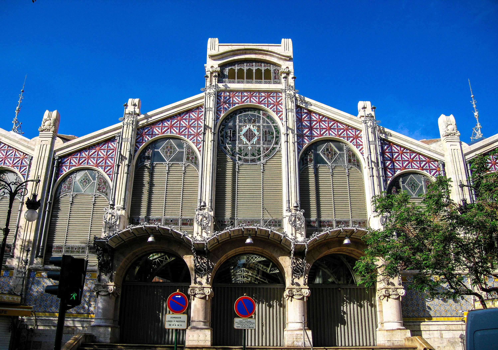

Comunidades y ciudades de España
A continuación le mostramos un listado con todas las ciudades de España según su comunidad autónoma:
- Andalucía:
- Aragón:
- Canarias:
- Las Palmas de Gran Canaria
- Tenerife
- La Gomera
- Cantabria:
- Comillas
- Torrelavega
- Laredo
- Castilla y León:
- Castilla-La Mancha:
- Guadalajara
- Ciudad Real
- Cuenca
- Cataluña:
- Barcelona
- Tarragona
- Girona
- Comunidad de Madrid:
- Madrid
- Anchuelo
- Torrejón de Ardoz
- Comunidad Valenciana:
- Valencia
- Alicante
- Castalla
- Extremadura:
- Galicia:
- Islas Baleares:
- La Rioja:
- Navarra:
- País Vasco:
- Asturias:
- Región de Murcia:





A continuación le mostramos otros enlaces de interes: